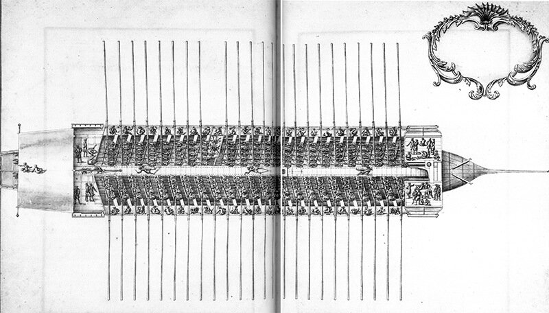

Едва лишь две такие знаменитости, как Дон Кихот и Санчо, показались на берегу, тот же час по знаку командора, предуведомленного о счастливо
Сервантес. Дон Кихот. Глава LXIII. (Перевод Н.Любимова)
Троекратное "У-у-у", точнее «Hou-Hou-Hou!» при посещении галеры отметили не только хитроумный идальго и его верный оруженосец. Мадам де Гриньян (de Grignan), сопровождавшая мужа, которого направили управлять Провансом, описывает в письме своей матери посещение галеры, «этого подобия ада», в Марселе. Она была «совершенно оглушена грохотом пушек и «Hou-Hou-Hou!» галерников.» Можно понять эту женщину, подавленную видом четырехсот гребцов, «стонущих под тяжестью цепей», скученных на небольшом пространстве галеры. Кто же были эти отверженные?

Стандартная галера из Альбома Кольбера, 1670 г.
Для того, чтобы войти в тему, остановимся на галерах XVI-XVII веков, а в последующем, следуя принятой нами методике, обратимся к более ранним эпохам.
Гребцы и солдаты , занимавшие самый низкий уровень в галерной иерархии, составляли примерно 80 % личного состава галеры. Рассмотрим состав этой группы. При этом, как и раньше, будем опираться на свидетельства галерного капитана Пантеро Пантера, исследование У.Бэмфорда, книги адмирала де Гравьера и другие источники; ссылки на них будем давать по ходу изложения.
Шевалье Пантеро Пантера (Pantero Pantera, которого называли также Pandoro Pandora (1568-1625)) был офицером военно-морского флота папы, капитаном галеры Санта Лючия. До этого он испытывал свою судьбу на галерах корсаров. В 1614 г. Пантеро Пантера выпустил в Риме книгу L’Armata navale объемом в 408 страниц, «разделенную на две части, в которых представлены инструкции по формированию, управлению и поддержанию в порядке морской армии». Нас будет пока интересовать первая часть, в которой рассматривается устройство корабля, артиллерия, шиурма и экипаж, обязанности офицеров и адмирала.
Пантеро Пантера пишет:
«Высоким жалованьем можно привлечь на борт солдат и матросов, но трудно убедить свободных людей взяться за весло галеры, смириться с цепями и кабалой, со всеми страданиями галерников. Если бы не глупость некоторых бродяг (мы сказали бы сейчас бомжей – vagabonds) и подонков, готовых продать себя, никогда не нашлось бы ни одного человека, который захотел бы добровольно превратить свою жизнь в презренное существование. Требуется подлинное искусство, чтобы собрать хорошую шиурму. Приходится использовать методы, которые не используются в других обстоятельствах и которые может быть осуждаются теми, кто испытывает угрызения совести. Но каждый век имеет свое понятие о совести. Когда христиане жертвуют своей судьбой и своей жизнью на флотах, противостоящих врагам нашей веры, не является ли справедливым заставить сделать то же самое злодеев, нарушающих общественное спокойствие., которые должны быть счастливы, что наложенная на них кара будет служить на благо государства?»
Так каковы же были эти методы набора солдат и гребцов на галеры?
Рассмотрим сначала способы, которыми набирали солдат для службы на галерах. Существующая рекрутская повинность не могла покрыть все потребности. Так, в 1674 г. для галер Франции требовалось 1200 человек. Капитаны вынуждены были вести конкурентную борьбу за каждого солдата, предлагая более высокое жалованье, о чем говорит Пантеро Пантера. Так, жалованье солдата было поднято до 6 ливров в месяц, капрала – немного больше, сержанту полагалось 9 ливров. Чтобы как то снизить остроту конкуренции между капитанами, в 1688 между ними было достигнуто соглашение, по которому капитан должен был предлагать кандидату в солдаты максимальную сумму, которую он готов ему платить. Если потенциальный рекрут не принимал первое предложение и пытался поступить на службу где-нибудь еще, он был обязан это сделать за меньшую сумму, чем было предложено в первый раз, и подлежал передаче первому капитану, если не удавалось договориться с новым командиром. Эта система, аналогичная методам набора в некоторые армейские организации того времени, защищала интересы капитанов; действительно, она гарантировала, как говорилось в достигнутом соглашении, что рекруты «не будут брать капитанов за горло». Ни один солдат не имел права поступить на службу на другой корабль, пока не будет иметь согласия капитана галеры, на которой он находится.
Число солдат на каждой галере колебалось, находясь в зависимости не только от экономической ситуации в стране, но даже в зависимости от сезона. Зимой, если галеры были в порту, на них находилась только постоянная часть солдат, своего рода неснижаемый запас, составлявший 10-25% от полного состава вооруженной команды. Даже в период летней кампании число солдат менялось в зависимости от успеха вербовщиков, числа галер, которые необходимо было вооружить, выполняемой задачи и конечно же от текущих финансов военного флота. Так, в 1674 г. морской министр приказал (очевидно, ради экономии), чтобы «все кроме 16 лучших» солдат были списаны с галер. Тремя годами раньше на каждой галере флота было не менее 92 солдат. В 1680 г. численность пехоты на галерах составляла 1200 человек, около 40 на галеру. В 1691 г. один мемуарист заметил, что на каждой галере «всегда» было около 75 солдат. В одном из приказов 1697 г. во время Рисвикского мира указывалось, что Галерный корпус тогда имел более четырех тысяч солдат, организованных в команды (роты) по 100 человек в каждой. Приказ 1699 г. снизил комплект солдат до 50 на одну галеру.
Многое в боеспособности галеры, ее эффективности как инструмента войны, зависело от этих солдат. Так было всегда в истории. Под какими бы названиями они не служили – римские легионеры, закованные в латы крестоносцы или мальтийские рыцари, наемники, «добровольцы» или призывники, - солдаты были самым важным элементом боеспособности галер. Но если говорить о французских галерах, то на них солдаты совсем редко видели врага, и еще реже вступали с ним в бой. Солдат в дни Людовика XIV больше подходил для того, чтобы охранять рабов и осужденных на борту, чем идти на абордаж с врагом. Часто во время похода солдаты не имели вовсе никаких занятий. Как рассказывал один из офицеров, они «по необходимости лежали бездеятельно на своих местах на борту галеры в течение всего похода, не имея никакого занятия», (кроме караульной службы, когда галера находилась на якоре; но обязанности по охране галеры разделяли и другие категории людей на галере).
По возвращении в Марсель солдаты могли быть назначены в охрану на свою собственную галеру, на плавучую тюрьму, или в арсенал, а также участвовали в смотрах. Некоторые смотры могли проводиться раз в неделю, другие проводились раз в месяц на Пляс д’Арм или некоторых других площадях, где демонстрировались приемы ближнего боя и владения оружием. Некоторые солдаты, с молчаливого согласия офицеров, договаривались не появляться на смотрах. И офицеры, и солдаты в равной степени были удовлетворены, когда смотры продолжались три дня кряду, чтобы разделаться с ними. Сам министр предложил, чтобы они планировались «в самое удобное время, чтобы солдаты не уставали и не лишались возможности зарабатывать на жизнь на стороне.»
Министр имел основания для подобных заявлений, так как довольствие, получаемое от флота, обеспечивало лишь часть жизненных потребностей солдат. Обычно солдат получал полное жалованье только во время кампании и, если повезет, половину жалованья в остальное время года. Чтобы иметь эту половину жалованья, получение которой не всегда можно было добиться, солдаты должны были участвовать в смотрах. В 1670-х рядовой получал только 6 ливров в месяц, из которых удерживались деньги за вещевое имущество. Иногда плата увеличивалась до 9 ливров в месяц (1695), но даже тогда солдатам на галерах платили меньше, чем солдатам на парусных кораблях:
Парусный флот Галеры
Солдат 10 livres 9 livres
Капрал 15 10
Сержант 21 15
Последние имели дополнительную выгоду, получая плату на квартирование и «различные другие благоприятные льготы в рационе, квартировании и отоплении». Эти отличия в обеспечении вели к «большой зависти». Солдаты галер были, видимо, правы, утверждая, что эти серьезные и давно существующие различия были совершенно несправедливы.
Даже когда солдаты получали полное жалованье, им требовалось где-то подрабатывать, чтобы содержать семью. Солдаты, которые не знали никакого ремесла, не могли просуществовать, так как хлеб самого низкого качества стоил 17 или 18 денье за фунт (зима 1694 г.)
Морское министерство и в эпоху Кольбера, и при Сеньелэ утверждало, что условия жизни солдат на галерах ухудшались из-за халатности их офицеров. В 1681 г. плохие условия жизни солдат вынудили министра прибегнуть к угрозе снизить жалованье тем офицерам, которые были за это ответственны. Но снова и снова повторялись жалобы на плохой набор рекрутов, устаревшее снабжение, плохую подготовку и дисциплину, экономическую эксплуатацию солдат своими офицерами. Общая ситуация дошла до того, что офицерами галер было внесено предложение, (возможно из озорства, считает У.Бэмфорд), чтобы солдатские капитаны получили право наследования имущества солдат, которые умирали. Министр им ответил вполне серьезно: «Король ни под каким предлогом не позволяет, чтобы это имущество [умерших солдат] было оставлено капитанам.»
Что бы ни говорилось об ответственности офицеров, министры также несли часть вины за неудовлетворительное состояние дел в этой области. Жалованья солдат были нищенские. Кольбер и Сеньелэ, казалось, были более озабочены внешним видом солдат, чем их боеспособностью. Можно полагать, что они пытались создать такой тип морской пехоты, который мог бы соперничать с пехотой, поставляемой в армию Людовика конкурентом моряков в Королевском совете Лувуа (Louvois, военный министр). Кольбер выразил глубокую надежду, что галерная пехота его величества произведет яркое впечатление: «Удалите из корпуса всех лиц, которые малы ростом или плохо сложены. Поддержите его любым возможным способом. Помимо всего, эта пехота должна быть хорошо вооружена и обмундирована. Вы должны вычитать часть жалованья солдат за обмундирование. Смотрите, чтобы все они были одеты единообразно, чтобы у них было одинаковое оружие и чтобы у всех были патронташи и ремни, а калибр и длина их мушкетов были одинаковы.» (Цит. по У.Бэмфорду).
Внешний вид был важен и для Кольбера, и для Людовика. Форменная одежда дисциплинировала. Найти «производящих впечатление» людей, привить им боевые качества, приучить их к поддержанию надлежащего внешнего вида, и делать все это несмотря на скудное солдатское жалованье было задачей капитана. Однако офицерам добиться это не удавалось. Министры, не облегчали решение этой задачи, а, казалось, только усложняли ее. Можно представить себе реакцию офицеров в 1681 г., например, на резкую критику министром внешнего вида солдат, и настойчивое требование, чтобы капитаны списывали «всех солдат, которые были «плохо сложены» [malfaites].»
В девяностые годы были предприняты слабые попытки, чтобы сделать галерных солдат действительно боевой силой. Однако им продолжали плохо платить, если вообще платили, боевая подготовка галерной пехоты велась из рук вон плохо, не получали они и моральной поддержки со стороны общества. Можно, видимо, сказать, что морская пехота как элитный род морских сил при Людовике XIV не состоялась.